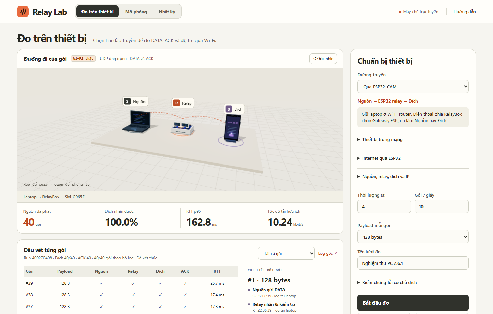

Relay và D2D · Bộ mang đi bảo vệ 2.6.1
Chủ đề 3 · Nguyễn Trần Thiên Phúc và Nguyễn Thị Thùy Duyên
Internet qua ESP32. B nối router, C nối RelayBox rồi mở web. Slide 16–18 và các chương 3–5 của tiểu luận có sơ đồ mạng, đồ thị RTT từ hai phiên đo thật và đối chiếu bốn cơ chế do chính ESP tính.
Hành trình của một gói tin
Xem phim mô phỏng 3D · 1 phút 58 giây. Theo một gói của tấm ảnh lên tầng 3 và lời xác nhận về tầng 1. Hai màn hình sóng minh họa cách AF khuếch đại và cách DF giải mã. Phần cuối cho biết kết quả thử hộp ESP32 trên bàn. Phim có lời kể và phụ đề tiếng Việt. Trong PowerPoint, bấm hình nhỏ trên slide mở đầu để chiếu phim.
Tệp sử dụng
Đo trên thiết bị

Hai Android + ESP · Máy ở Wi-Fi router có thể mở phòng đo. Khi đo xong, mỗi điện thoại lưu log riêng. Bấm Nhật ký trên máy để chọn phiên và xuất file.
Phim dùng giọng Thiện Minh của VieNeu-TTS v3 Turbo. Nhạc nền và hoạt họa được dựng riêng cho Relay Lab.